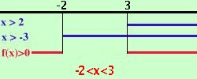

|
x2 - x - 6 < 0 Considero l'equazione associata x2 - x - 6 = 0 Risolvo x1 = -2 x2 = 3 Quindi la disequazione e' equivalente a (x+2) (x-3) < 0 Devo risolvere le due disequazioni (x+2) > 0 (x-3) > 0 e considerare dove i segni sono discordi (piu' per meno da' meno) perche' devo trovare i valori dove tutta l'espressione e' negativa Risolvo la prima: x + 2 > 0 x > -2 il primo fattore e' positivo per x maggiore di meno due Risolvo la seconda x - 3 > 0 x > 3 il secondo fattore e' positivo per x maggiore di 3 faccio lo schema x > -2 - - - - - - - (-2)+ + + + + + + + + + + + + + + + + x > 3 - - - - - - - - - - - - - - - - (3) + + + + + + + + f(x) + + + + + (-2) - - - - - - (3) + + + + + + + + + se hai bisogno di ulteriori spiegazioni per fare lo schema f(x) indica l'espressione di partenza La parentesi tonda indica che l'espressione si annulla nel punto Io devo cercare dove l'espressione e' negativa e questo succede per -2 < x < 3 oppure in altra notazione  |